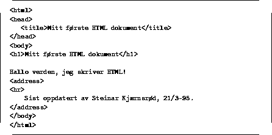
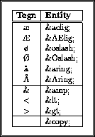

Sentralt i språket står begrepet tag, eller kommando om vi vil. I dette kompendiet vil vi bruket ordet ``tag'' i det følgende.
En tag innledes av en venstre skråparentes -- '<' -- og avsluttes med '>'. Tagens navn vil være første element mellom de to parentesene, og oftest står det ikke noe mere mellom parentesene. Men en tag kan også ha sk. attributter eller opsjoner, der en opsjon har et navn og evt. en verdi.
Et eksempel på to tager uten opsjoner er vist i figur 2, mens figur 3 viser en tag med to opsjoner.
Figure: Eksempel på to tager uten opsjoner

Hittil har vi kun snakket om og vist såkalte starttager. Noen tager krever også en avslutningstag, og slike tager kan vi si ``opererer på'' teksten som står mellom start- og avslutningstagen. Innenfor SGML terminologien sier vi at en slik tag er en container.
I figur 4 ser vi flere container tager brukt. Dette eksemplet viser samtidig hvordan et helt minimalt HTML dokument kan se ut. Merk at et HTML dokument består av to atskilte deler -- nemlig en header del og en kropp. Rundt hele dokumentet ligger <html> .. </html> . Et HTML dokument bør også ha en veldefinert avslutning, men dette vil rent teknisk være en del av dokumentkroppen, og det er ikke definert seksjoneringstager for dette formålet.

Et par andre nyttige ting å vite før vi ser på de enkelte tagene: